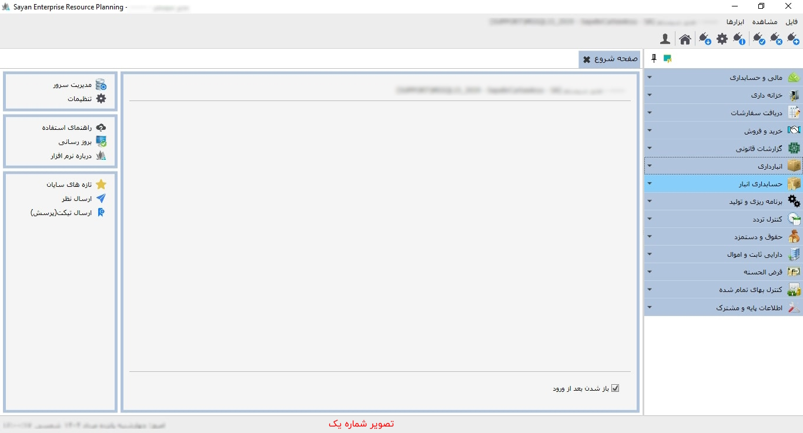

برای ورود به صفحه ی شروع همانند تصویر در صفحه ی اصلی نرم افزار بر روی علامت خانه(Home) کلیک کنید:
پس از کلیک بر روی آیکن «صفحه ی شروع» تصویر زیر نمایان می شود :
برای ادامه مطلب به تصویر شماره دو مراجعه نمایید.
-کادر شماره یک:
برای ادامه مطلب به تصویر شماره سه مراجعه نمایید.

-کادر شماره یک:
-کادر شماره دو:
برای ادامه مطلب به تصویر شماره چهار مراجعه نمایید.
-کادر شماره یک:
-کادر شماره دو:
برای ادامه مطلب به تصویر شماره پنج مراجعه نمایید
 مدیریت سرور :
این پنجره ارتباط با اس.کیو.ال و پس از آن پنجره
مدیریت سرور را نمایش می دهد.
همانطور که پیشتر توضیح داده شده است، شما از
این طریق می توانید به صفحه مدیریت سرور
دسترسی داشته و تنظیمات و عملیات مورد نیاز را
بر روی پایگاه داده سرور انجام دهید.
مدیریت سرور :
این پنجره ارتباط با اس.کیو.ال و پس از آن پنجره
مدیریت سرور را نمایش می دهد.
همانطور که پیشتر توضیح داده شده است، شما از
این طریق می توانید به صفحه مدیریت سرور
دسترسی داشته و تنظیمات و عملیات مورد نیاز را
بر روی پایگاه داده سرور انجام دهید.
برای ادامه مطلب به تصویر شماره شش مراجعه نمایید.

 تنظیمات
: توضیحات این بخش را مطالعه فرمایید
تنظیمات
: توضیحات این بخش را مطالعه فرمایید
برای ادامه مطلب به تصویر شماره هفت مراجعه نمایید.
-راهنمای استفاده(کادر شماره یک):
-کادر شماره دو:
برای ادامه مطلب به تصویر شماره هشت مراجعه نمایید.